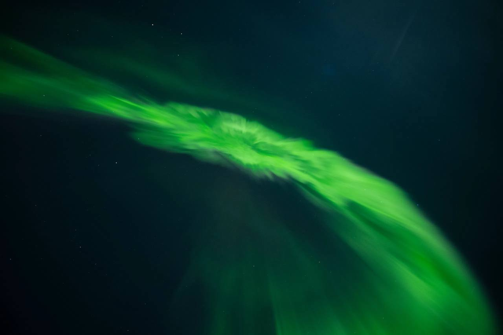
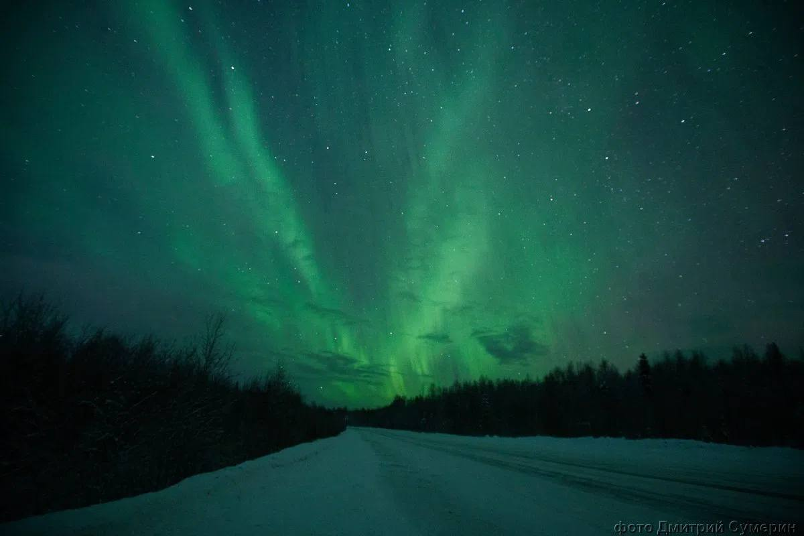

Снегоходы
- Три снегохода: Arctic Cat и BRP
- За руль можно сесть самому, нужны права категории B
- Без прав поедете пассажиром
Цены и маршруты скоро здесь, пока по телефону
Записаться
Возим из Мурманска на своей технике. Можно самому сесть за руль снегохода. Ставим лагерь, готовим еду на мангале.
Цены и маршруты скоро здесь, пока по телефону
ЗаписатьсяМеста, сезон и цены уточняйте по телефону
ЗаписатьсяСтоимость считаем под вашу компанию
ОбсудитьВся техника своя.
Хотите вести снегоход сами — возьмите водительские права категории B.
Нас двое. Возим гостей с декабря 2025 года, а по Кольскому ездим сами много лет. Всё делаем сами: везём, ставим лагерь, готовим.
Выезжаем из Первомайского района Мурманска.
Берём детей с 7 лет. Если едете семьёй, скажите об этом при записи — подберём маршрут.



Фото Дмитрия Сумерина, Кольский полуостров.
Если поездка срывается из-за погоды, переносим её, предлагаем другой вариант или возвращаем деньги.
Предоплата переводом на карту. Сумму назовём при записи.
Если вы отменяете поездку за 5 дней до начала, возвращаем 50% предоплаты.
Да, если у вас есть водительские права категории B. Без прав поедете пассажиром.
С 7 лет.
Перенесём поездку, предложим другой вариант или вернём деньги — как вам удобнее.
Предоплата переводом на карту. Сумму назовём при записи.
Да. Сделаем индивидуальный тур: поставим лагерь, приготовим еду на мангале.
Из Первомайского района Мурманска. Точное место встречи скажем при записи.
Позвоните или напишите — расскажем, куда можно поехать в ваши даты, и запишем.
Можно написать в Max или СМС на тот же номер.